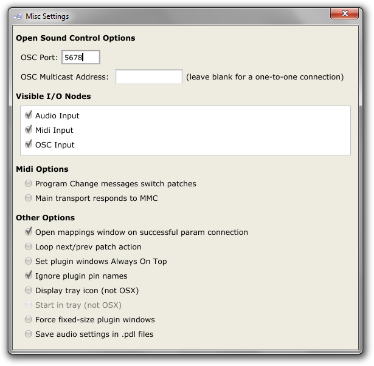
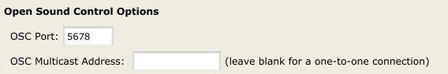
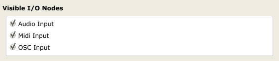
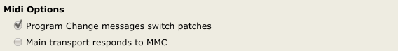
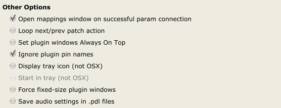

Misc Settings
The Pedalboard has a number of miscellaneous settings accessible via Options->Misc Settings.

Open Sound Control Options

OSC Port
This sets which port the app listens on for Open Sound Control messages. See the OSC Mappings page for more details.
OSC Multicast Address
This option is for situations where you want to use a single OSC client to send OSC messages to multiple OSC servers (like the Pedalboard). To make use of it you must choose an ip address from the specially-defined range 224.0.0.0 - 239.255.255.255 and enter it into the text box. The Pedalboard will then respond to OSC messages received on that address rather than the ip address displayed in the About box. The same OSC messages will be broadcast simultaneously to any other OSC servers which are listening on that multicast address. If left blank, the Pedalboard will default to a one-to-one connection (messages sent from an OSC client will only go to the Pedalboard). For more information on ip multicasting, see wikipedia.
Visible I/O Nodes

These toggle buttons let you hide any I/O nodes you're not interested in.
Midi Options

Program Change messages switch patches
Toggling this option will let you switch patches via MIDI Program Change messages (note that you can also use MIDI CCs to change patches, via the Application Mappings dialog).
Main transport responds to MMC
Toggling this option will let you control the app's main transport with Midi Machine Control messages (note that you can also use MIDI CCs to control the main transport, via the Application Mappings dialog).
Other Options

Open mappings window on successful param connection
By default, dragging a connection to a plugin's param input will open that plugin's mappings window. This toggle button lets you switch that option off.
Loop next/prev patch action
If this button is toggled on, patch selection will loop (i.e. sending the app a next patch message (either via MIDI/OSC or the next patch UI button) while on the last available patch will switch back to the first patch, and vice versa).
Set plugin windows Always On Top
If this button is toggled on, plugin editor windows will stay in front of the main Pedalboard window (and any other windows you might have open).
Ignore plugin pin names
Because of the way the pedalboard draws plugin nodes, plugins with long pin names can generate unnecessarily wide nodes. Toggling this button on will cause the Pedalboard to rename all input and output pins with short generic names.
Display tray icon
If toggled on, this option will place a Pedalboard 2 icon in the system tray. This icon can be double-clicked to show/hide the main Pedalboard window, and also has a right-click menu to do the same. If this option is toggled on, clicking the window's close button will not close the application; to close the application use the icon's right-click menu.
Not available on OSX.
Start in tray
If the Display tray icon option is toggled on, this option can be used to start the application in the tray, with no window visible. This can be used in addition to a default file to start the app running with a particular setup that doesn't require user interaction.
This option will be greyed out on OSX, or if Display tray icon is not toggled on.
Force fixed-size plugin windows
This is a compatibility option, for badly-behaved plugins which do not display their editors when the app provides them with a resizable window.
Save audio settings in .pdl files
If toggled on, this option will store the current audio settings alongside any patch settings when doing File->Save/Save As. When loading a .pdl file with audio settings stored in it, those settings will be applied before the patch itself is loaded.
Note: audio settings will only be loaded from .pdl files if this option is toggled on; otherwise they will be ignored.